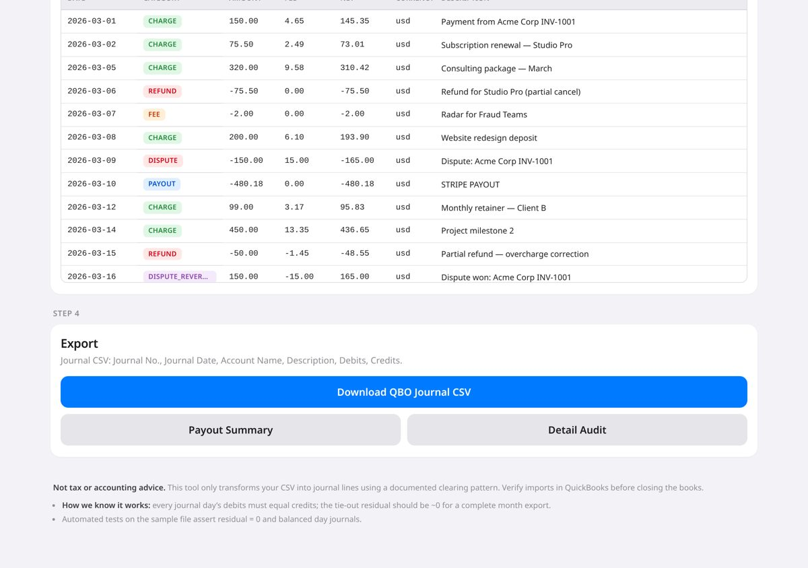
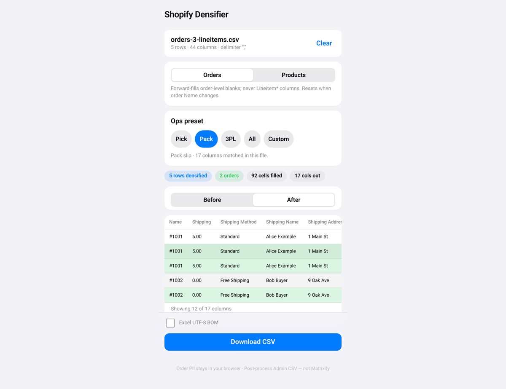
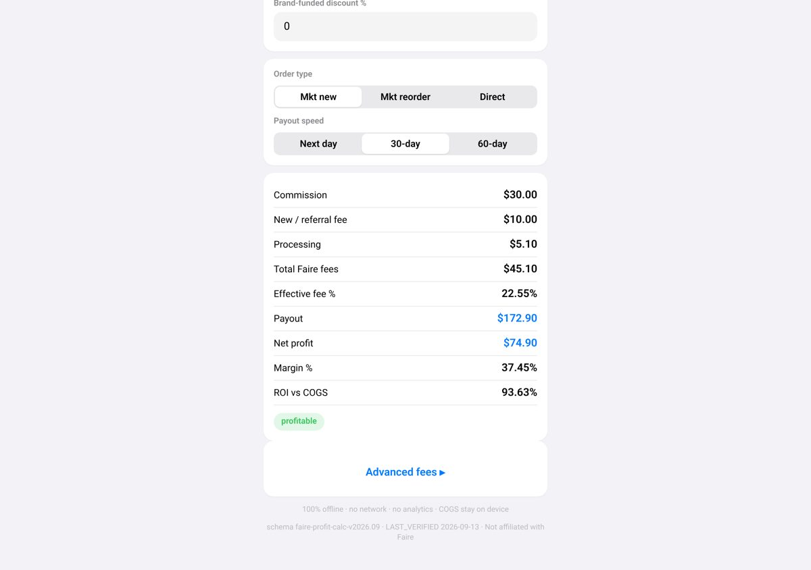

StripeClear Journal
Stripe Balance Transactions CSV to QuickBooks Journal — Offline
Turn a Stripe Balance Transactions CSV into a balanced QuickBooks Online journal CSV, plus a payout summary and an audit file.
Small offline browser tools that turn messy CSV exports from Stripe, QuickBooks, Xero, Shopify, Etsy and more into clean, ready-to-import files. $8 each, paid once.
Browse all on GumroadEvery tool costs $8, paid once on Gumroad, and runs locally in your browser.
StripeClear Journal
Turn a Stripe Balance Transactions CSV into a balanced QuickBooks Online journal CSV, plus a payout summary and an audit file.
BooksExport Clean
Clean QuickBooks Online or Xero export CSVs for accountant handoff: junk rows stripped, ISO dates and normalized amounts. Not tax advice.
Tracker Invoice Lines
Turn a Toggl, Clockify or Harvest detailed time CSV into Xero, Wave or generic Qty × Rate invoice line CSVs.
Bandcamp Sales Clean
Turn your Bandcamp raw sales report CSV into Wave, Xero Bank Statement and generic P&L line CSVs, with optional artist splits.
Shopify CSV Densifier
Fill the blank order-level cells in a Shopify Orders CSV, then trim it to Pick, Pack or 3PL column presets.
Shopify Customers MailMerge
Turn a Shopify Customers CSV into clean US, UK, CA, AU or generic mail-merge address columns.
Etsy Listing CSV Fixer
Validate and safely clean Etsy listing export CSVs, then download a cleaned file and an issue report.
Faire Wholesale Fee & Profit Calculator
See what you keep on Faire: compare Marketplace and Direct orders, the new-retailer fee and payout speed, with bulk CSV and break-even pricing.
Whatnot Seller Profit Calculator
See what you keep on Whatnot after category commission and payment processing, with bulk CSV and a show-night print sheet.
Event QR Badges
Turn an attendee CSV into printable Avery 5395-compatible name badges and fold-up table tents with vCard QR codes.
Short answers to the questions these tools solve.
Export your Balance Transactions CSV from Stripe and drop it into StripeClear Journal. It builds a balanced QuickBooks Online journal CSV with fees, refunds and payouts tied out, plus a payout summary and a detail audit. Everything runs offline in your browser; it does not use the Stripe API. StripeClear Journal on Gumroad.
Drop a QuickBooks Online or Xero export CSV (such as a Transaction List or Account Transactions) into BooksExport Clean. It strips junk rows, converts dates to ISO format and normalizes amounts, then gives you a clean CSV for your accountant. It is a formatting aid, not tax advice. BooksExport Clean on Gumroad.
Export a detailed time CSV from Toggl, Clockify or Harvest and drop it into Tracker Invoice Lines. It groups the entries into invoice line CSVs for Xero Sales Invoice import, Wave, or a generic Qty × Rate format. It does not create PDF invoices or connect to Xero or Wave. Tracker Invoice Lines on Gumroad.
Export the raw sales report CSV from Bandcamp and drop it into Bandcamp Sales Clean. It produces Xero Bank Statement, Wave and generic P&L line CSVs, with optional artist split output. There is no login or API connection, and fan emails stay on your device. Bandcamp Sales Clean on Gumroad.
Drop a Shopify Admin Orders CSV into Shopify CSV Densifier. It forward-fills the blank order-level cells (such as email and shipping address) on every line-item row, leaves the line-item columns alone, and can trim the file to Pick, Pack or 3PL column presets. Shopify CSV Densifier on Gumroad.
Drop a Shopify Admin Customers CSV into Shopify Customers MailMerge. It maps the columns to a US, UK, CA, AU or generic address pack, drops incomplete addresses, strips email and phone, and removes duplicate addresses. The output is for mail merge, not for re-importing into Shopify. Shopify Customers MailMerge on Gumroad.
Drop your Etsy listing export CSV into Etsy Listing CSV Fixer. It validates the file, applies safe fixes (such as trimming, currency formatting and tag delimiters), and lets you download a cleaned CSV and an issue report. It does not upload to Etsy or create listings. Etsy Listing CSV Fixer on Gumroad.
Enter a SKU or drop a catalog CSV into the Faire Wholesale Fee & Profit Calculator. It compares Marketplace new-retailer, Marketplace reorder and Faire Direct scenarios and shows break-even wholesale prices. Fee constants are editable; always check current fees in your Faire Brand Portal. Faire Wholesale Fee & Profit Calculator on Gumroad.
Pick a region and category in the Whatnot Seller Profit Calculator, then enter a lot or drop a show CSV. It shows your net after commission and processing fees, and can print a show-night sheet. Fee constants are editable; Whatnot Seller Hub is the source of truth for payouts. Whatnot Seller Profit Calculator on Gumroad.
Save your attendee list as a CSV and drop it into Event QR Badges. It lays out Avery 5395-compatible name badges and DIY fold-up table tents, each with a vCard QR code, ready to print. The attendee list never leaves your laptop. Event QR Badges on Gumroad.
Captured from the actual tools running locally.



Your exports contain customer, payout and pricing data. These tools keep it on your device.
Files are processed locally in your browser. Nothing is sent to a server.
No login, no API connection, no password to share.
Pay $8 once on Gumroad and keep the tool.
You get CSV or printable output that you import yourself or hand to your accountant.
Step-by-step guides on Gumroad, free to read.
No. The tools run locally in your browser and work offline. Your files stay on your device.
No. Each tool costs $8, paid once on Gumroad. No account is needed.
No. The tools don't connect to any service. They create files that you import yourself.
See each product page on Gumroad for its refund policy.